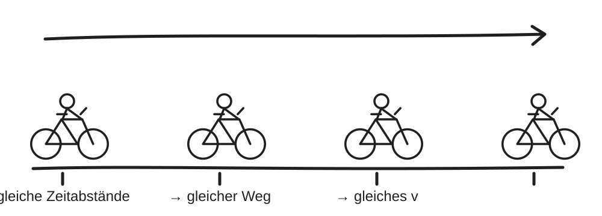

Interaktive Übung · Gleichförmige Bewegung
Weg, Geschwindigkeit und Beschleunigung
Rechne mit \(s\), \(v\) und \(a\). Trage danach die Messpunkte der Bewegung in ein Diagramm ein.

Deine Aufgabe
Eine gleichförmige Fahrt
\(s=v\cdot t\)\(v=\frac{s}{t}\)\(a=\frac{\Delta v}{\Delta t}\)